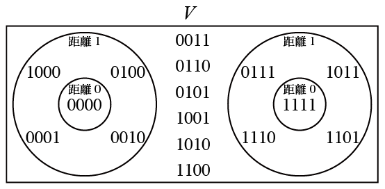
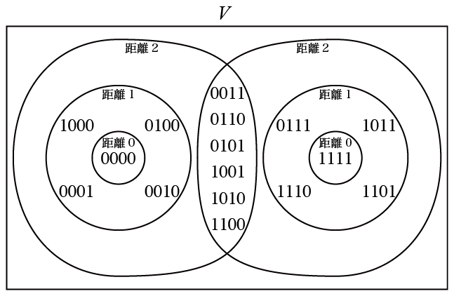

前回例としてあげた 4 回繰り返し符号をもう一度とりあげる． この符号の生成行列とパリティ検査行列はそれぞれ \[ G =\left( \begin{array}{cccc} 1 & 1 & 1 & 1 \end{array} \right), \] \[ H =\left( \begin{array}{cccc} 1 & 1 & 0 & 0 \\ 1 & 0 & 1 & 0 \\ 1 & 0 & 0 & 1 \end{array} \right) \] であり，符号語は \[ C = \{0000, 1111\}, \] この符号のパラメータは，符号語長 $n=4$，最小距離 $d=4$，誤り訂正能力 $t = \lfloor(4-1)/2\rfloor =1$ である． $n=4$ なので全空間 $V$ の要素のベクトルは $4$ ビットの全パターン $16$ 個である．
この符号語の球と全空間 $V$ のベクトルの配置を示したものが図 13.1 （図12.2と同じ）である．

図13.1 4回繰り返し符号の符号語を中心とする球（再掲）
図13.1 で，符号語を中心とする球の半径 $s$ を $0, 1, \ldots$ のように大きくしていった場合を考える．$s=0$ の球は 一番小さな場合で符号語だけを含む球であり，当然排他的 （他の球と交わらない）である．この符号の場合は $s=1$ まで拡大しても球は排他的である．$s=2$ になると 球に交わりができて，排他的でなくなる（図13.2）．

図13.2 4回繰り返し符号の符号語を中心とする半径 2 までの球
球が排他性を保つ半径の最大値がパッキング半径で， 前回の説明でパッキング半径は誤り訂正能力 $t = \lfloor(d-1)/2\rfloor$ に等しいことを示した． 図13.1, 13.2 よりこの符号のパッキング半径が $1$ であることがわかる．完全符号でなければ 球の半径をパッキング半径としたときに 図 13.1 の左右の球の間のベクトルのように どの球にも属さないベクトルが存在する．
半径 $s$ を $0,1,\ldots$ と大きくしていったとき， パッキング半径 $t$ までは球は排他的である． それを超えて $s$ を増やしてゆくと図13.2 のように全空間 $V$ の要素全てがどれかの球の要素になる．最初に球が 全空間の要素をカバーするようになる直径 $s$ の値を 被覆半径という．4 回繰り返し符号は $s=2$ で初めて全空間をカバーするので被覆半径は $2$ である．被覆半径は以下のように定義される
符号語を中心とする直径 $s$ の球が全空間のベクトルを カバーするような $s$ の最小値を被覆半径 $r$ という．
定理10
符号 $C$ の被覆半径 $r$ は以下の性質をもつ
例 13.1
4回繰り返し符号では図13.2 より半径 $1$ の球では $V$
の全ベクトルをカバーせず，半径 $2$ でカバーするので
被覆半径 $r$ は $2$ である．
スタンダードアレイの手順でコセットリーダーを左に置いて
この符号のコセットを書き出すと
$\{0000, 1111\}$
$\{1000, 0111\}$
$\{0100, 1011\}$
$\{0010, 1101\}$
$\{0001, 1110\}$
$\{1100, 0011\}$
$\{0110, 1001\}$
$\{1010, 0101\}$
となる．コセットリーダーの重みがコセットの重みなので
重み最大のコセットは $\{1100, 0011\}$ などで，その重み $2$
は被覆半径に一致している．
4回繰り返し符号のパリティ検査行列は \[ H =\left( \begin{array}{cccc} 1 & 1 & 0 & 0 \\ 1 & 0 & 1 & 0 \\ 1 & 0 & 0 & 1 \end{array} \right) \] である．シンドロームは $3$ ビットの全パターン $8$ 種の列ベクトルであるが，これを $H$ の列の和で作ると， 第 4 列 $=\left(\begin{array}{c}0\\0\\1\end{array}\right)$， 第 3 列 $=\left(\begin{array}{c}0\\1\\0\end{array}\right)$， 第 3 列 + 第 4 列 $=\left(\begin{array}{c}0\\1\\1\end{array}\right)$， 第 2 列 $=\left(\begin{array}{c}1\\0\\0\end{array}\right)$， 第 2 列 + 第 4 列 $=\left(\begin{array}{c}1\\0\\1\end{array}\right)$， 第 2 列 + 第 3 列 $=\left(\begin{array}{c}1\\1\\0\end{array}\right)$， 第 1 列 $=\left(\begin{array}{c}1\\1\\1\end{array}\right)$ として，最大 $2$ 列の和で作ることができる． $1$ 列では $=\left(\begin{array}{c}0\\1\\1\end{array}\right)$ などのシンドロームが作れないので，全てのシンドロームを $H$ の 列の和で作ることのできる個数の最小値は $2$ である． これは被覆半径に一致している．
（例終わり）
証明
（1. の証明） まず，「$r$ よりも重みが大きいコセットが存在しない」ことを 背理法で証明する．背理法の仮定として 「$r$ よりも重みの大きいコセットが存在する」を仮定する． $r$ よりも重みの大きいコセットのコセットリーダーを $\vec{x}$ とする．背理法の仮定より $wt(\vec{x}) > r$ となる． 全ての符号語 $\vec{c_i} \in C$ について $\vec{x}$ との距離 $d(\vec{c_i}, \vec{x})$ を考える． $d(\vec{c_i}, \vec{x}) = wt(\vec{x} - \vec{c_i})$ であるが， 全ての符号語 $\vec{c_i}$ についての $\vec{x} - \vec{c_i}$ からなる集合が $\vec{x}$ が属するコセットである．$\vec{x}$ がこのコセットのリーダーであるから，このコセットには $\vec{x}$ より重みの小さいベクトルは存在しない． それゆえ全ての符号語 $\vec{c_i}$ について $wt(\vec{x} - \vec{c_i})$ は $r$ より大きい．結局全ての符号語 $\vec{c_i}$ について $d(\vec{c_i}, \vec{x})$ が $r$ より大きいため，$\vec{x}$ はどの符号語を中心とする半径 $r$ の球にも属さない． これは被覆半径 $r$ の定義である，符号語を中心とする半径を $r$ の球が全ベクトルをカバーすることに反するので矛盾する． 背理法により「$r$ よりも重みが大きいコセットが存在しない」 ことが示された．つまり「重み最大のコセットの重み $\leq r$」 がいえた．
次に，コセットの重みの最大値を $a$ としたときに半径 $a$ の球が全空間をカバーすることを示す． これがいえれば半径 $a$ でカバーするのだから カバーする半径の最小値である被覆半径 $r$ は $a$ 以下，すなわち 「重み最大のコセットの重み（$a$） $\geq r$」 であるといえる．上で示した「重み最大のコセットの重み $\leq r$」 とあわせて証明が完成する．これも背理法で証明するので 背理法の仮定として 「コセットの重みの最大値を $a$ としたときに半径 $a$ の球が全空間をカバーする」の否定， 「半径 $a$ の球が全空間をカバーしない」を仮定する． その場合どの符号語からの距離も $a$ より大きいベクトル $\vec{y}$ が存在することになる． $\vec{y}$ はコセットの性質からどれかのコセットに所属している． $\vec{y}$ が所属しているコセットのコセットリーダーを $\vec{x}$ とすると，$\vec{y}$ はある符号語 $\vec{c_1}$ を使って $\vec{y} = \vec{x} + \vec{c_1}$ と書ける． ここで符号語 $\vec{c_1}$ から $\vec{y}$ の距離を考えると， $d(\vec{y},\vec{c_1}) = d(\vec{x} + \vec{c_1}, \vec{c_1}) =wt(\vec{x})$ となる． $\vec{x}$ はコセットリーダーなので，その重みは 全てのコセットの重みの最大値 $a$ 以下である． すなわち $d(\vec{y},\vec{c_1})$ は $a$ より大きいことはないので $\vec{y}$ は符号語 $\vec{c_1}$ を中心とした半径 $a$ の球に含まれることになり， $\vec{y}$ がどの符号語からも $a$ よりも大きい距離を もつことに反する．矛盾を導き出すことができたので 背理法により「コセットの重みの最大値を $a$ としたときに半径 $a$ の球が全空間をカバーする」がいえた． 最初に説明した論理により「重み最大のコセットの重みは被覆半径 $r$ に等しい」ことがいえた．
（2. の証明） 定理 3 より，あるコセットの 要素全てに対するシンドロームは同一である．このため あるコセットの要素に対するシンドロームはコセットリーダー に対するシンドロームになる．また， $2^{n-k}$個のありうるシンドロームは全てどれかのベクトルの コセットのシンドロームとして現れるから，全てのコセットの コセットリーダーのシンドロームですべてのシンドロームを 得ることができる． パリティ検査行列を $H$ とすると ベクトル $\vec{y}$ のシンドロームは \[ \mbox{syn}(\vec{y})=H\vec{y}^T \] であるからコセットリーダーのシンドロームはコセットリーダーの ビットが $1$ になっている所に対応する $H$ の列の和である． 1. より重み最大のコセットの重みが $r$ であることがわかっているのでコセットリーダーの重みの 最大値は $r$ であるから，$H$ の $r$ 個以下の列の和で 全てのシンドロームを作ることができる．これにより $r$ 個あれば全シンドロームが出せるので， 「パリティ検査行列の $s$ 個以下の列の和で どのシンドロームも作ることができるような $s$ の 値の最小値」は $r$ 以下であることがわかる．
$r -1$ 個では全シンドロームが出せないことをいえば $r$ が最小値であることがいえるので証明が完成する． 1. よりコセットリーダーの重みの最大値が $r$ なので， 実際にコセットリーダーの重みが $r$ のコセットが存在する． 重み $r-1$ のコセットリーダーだけでは全ての コセットにならないのでリーダーの重みが $r-1$ 以下のシンドロームだけでは全てのシンドロームを 作ることができない．このことから 「はパリティ検査行列の $s$ 個以下の列の和で どのシンドロームも作ることができるような $s$ の 値の最小値」は $r$ 以上であることがいえる． 上の段落の結果と合わせて 「はパリティ検査行列の $s$ 個以下の列の和で どのシンドロームも作ることができるような $s$ の 値の最小値は $r$ である」ことがいえる．
（証明終わり）
符号のパッキング半径 $t$ と被覆半径 $r$ が等しいとき，つまり 球の排他性を保って全空間をカバーできるとき， その符号は完全符号である．図 12.1 から 3 回繰り返し符号が 完全符号であること，図 12.2 から 4 回繰り返し符号が完全符号でないことがわかる． すでに述べたように，2ビット以上訂正可能な完全符号は 2 種（とそれと等価な符号）しかないことが知られている．
$t=r$ （完全符号）の次に優秀な符号として $t+1=r$ となる符号が考えられる．そのような符号を 準完全符号という．
例13.2
図 13.2 を用いた説明で 4 回繰り返し符号のパッキング半径は $t=1$， 被覆半径 $r=2$ であることを示しているので， 4 回繰り返し符号は準完全符号である．（例終わり）
準完全符号は $t$ 以下の誤りは全て訂正可能で $t+1$ の誤りをいくつか訂正可能である． 完全符号は数が少ないという残念な結果が判明してしまっているが， 準完全符号は数も多く，実用的である．
\[ G =\left( \begin{array}{cccccc} 1 & 1 & 1 & 1 & 1 & 1\\ \end{array} \right) \] を生成行列とする $6$ 回繰り返し符号について以下の問に答えよ．
授業の6日後までにメールで提出せよ． メールの件名（サブジェクト）は CT13 とせよ．